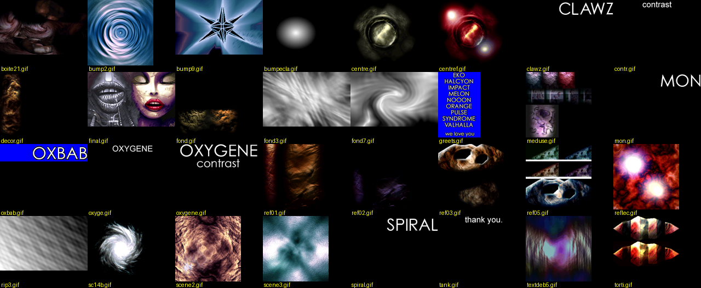
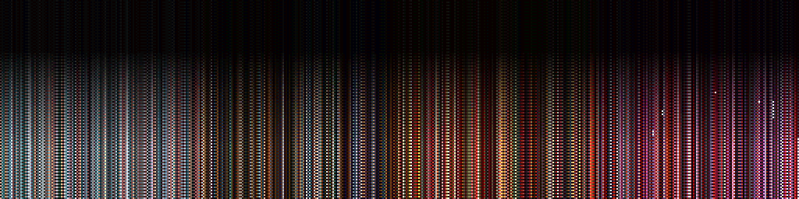
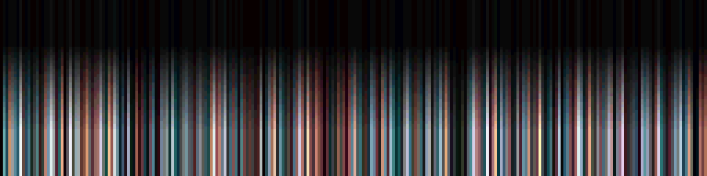

CONTRAST by Oxygene (code OXBAB, 3D
graphics SPIRAL and MON, music CLAWZ/Impact, sound system MIDAS 0.50a).
A DOS/4GW (Watcom C/C++32) executable of 405 KB, a 2.6 MB data archive
CONTRAST.BIN (59 files) and a 12-channel FastTracker 2
module CONTRAST.XM. The recorded run lasts 560 s (39,243
ticks).
Everything below was read in the disassembly
(oxg_out/code.asm) and in the port
(oxg_web/src/*.js, one module per routine group; every
scene is a class with step(sync) -> {frame, pal}, one
call = one 70 Hz tick). Longer reference material is in
oxg_out/REVERSE.md and oxg_out/EFFECTS.md; the
asm tricks are in WRITEUP-asm.md.
node oxg_web/test/test_seq.js runs the whole chain and
reports zero differing ticks, except tick 23,511 where the recording
itself caught the program half-way through its own screen update
(oxg_out/EFFECTS.md, section 7). Single routines were also
checked against memory dumps (test_*.js). I did not re-run
the tests for this write-up; the figures are those stated in
oxg_out/EFFECTS.md and oxg_web/README.md.site/assets/sync.json), and plays the module rendered with
libopenmpt, time-warped row by row to the emulated MIDAS timing. In "No
Sound" mode MIDAS plays about 3.6 % slower than nominal
(oxg_out/EFFECTS.md); the behaviour on a real sound card
could not be observed.oxg_web/README.md). The 3D engine
itself corrects for it: the camera matrix's y row is scaled by 512/596
(section 4.2).[0x44E20] is then a frame counter and "wait for the next
frame" is three instructions (0x102CB). The recorded run gives 70.09
ticks per second.1 -> 0, then 3, 4, ... 0xD). The scene code contains no
timeline of its own beyond tick counts inside a scene. The port
therefore takes the sync value as an input of
step(sync).0x10F64 builds 64 palettes (768 bytes of 8-bit components
each) from a source and a destination. A fade is
DAC = table[tick] >> 2. The port
(src/fade.js) is the whole routine:for (let i = 0; i < 768; i++) { // src null: from black; dst null: to black
if (!src) { P[i] = 0; D[i] = dst[i] << 2; }
else if (!dst) { P[i] = src[i] << 8; D[i] = (-src[i]) << 2; }
else { P[i] = src[i] << 8; D[i] = (dst[i] - src[i]) << 2; }
}
for (let s = 0; s < 64; s++) for (let i = 0; i < 768; i++) { out[s*768+i] = (P[i] >> 8) & 0xFF; P[i] += D[i]; }DAC colour 0 is forced to black every tick. Palettes stored in the
archive (textdeb*.bin, bump3..5.bin) are 768
bytes of 8-bit values; GIFs carry theirs inside.
trunc(sqrt(i)). src/tables.js reproduces them
bit-exactly:const a = (2 * i) * 3.141592654 * 0.000244140625;
cos[i] = Math.trunc(Math.cos(a) * 32768); sin[i] = Math.trunc(Math.sin(a) * 32768);| # | scene (routine) | what you see | plays from | ends |
|---|---|---|---|---|
| 1 | intro (0x11720) | pink swirl tunnel, OXYGENE letters appear one by one | 0 s | 49.9 s |
| 2 | water (0x127F0) | bump-mapped water floor with the credit logos | 50.5 s | 97.7 s |
| 3 | scenebis.3dm (0x15BD0) |
lit tori, marble floor, four chrome objects; ripple at the end | 102.3 s | 187.2 s |
| 4 | greetings (0x184A0) | ten glowing orbs behind the lettering, two dissolves | 193.4 s | 233.7 s |
| 5 | cirk4.3dm (0x16130) |
flight through a reflection-mapped metal complex; ripple | 239.7 s | 330.6 s |
| 6 | particles (0x18BA0) | point clouds drawn as shaded balls, morphing | 335.5 s | 397.7 s |
| 7 | line3.3dm (0x16644) |
wireframe with trails flowing outwards | 402.1 s | 425.6 s |
| 8 | poto4.3dm (0x16A7C) |
textured room with a reflecting centrepiece | 427.1 s | 475.0 s |
| 9 | meduse2.3dm (0x16CF0) |
articulated jellyfish, three title strips, fade | 475.0 s | 560 s |
Scenes 3, 5, 8 and 9 are the same loop with different constants (file
names, starting sync, tick of the end ripple), which is why
src/scene3.js is one parametrised class
(SCENEBIS, CIRK4, POTO4,
MEDUSE configs). Setups that take long (the dissolve tables
of the greetings scene, the sprite groups of the particle scene) just
let ticks pass with the old picture on screen; the port reproduces those
gaps (11 ticks in the greetings scene, about 340 in the particle
scene).
A polar map of 65,536 u16 entries is
computed once (0x11864) by sweeping radius r in 0..179 and angle a in
0..4095; each hit cell stores a texture offset whose high byte depends
on the radius (4000 / d) and whose low byte follows the
angle. Later radii overwrite earlier ones. From
src/tables.js:
const x = (((t.cos[a] * 2 * r) >> 16) + 0x80), y = (((t.sin[a] * 2 * r) >> 16) + 0x80);
const q = Math.trunc(4000 / d);
map[(y << 8) + x] = ((q << 8) + ((((q >> 1) & 0xFF) + (a >> 4)) & 0xFF)) & 0xFFFF;Per frame the screen is not computed pixel by pixel: for each of 100
rows the program starts at a rotated, scaled position (u, v kept as
8.16-style fractions in one register pair) and walks a line through the
map. Each step reads map[(u_int, v_int)], adds an animation
offset and reads the texture. Two screen rows share one computation
(each dword is stored twice, one line up) and only 256 of the 320
columns are computed (64 words per row, four pixels each). From
src/swirl.js:
const pos = ((ecx >>> 8) & 0xFF) << 8 | al; let t = map[pos];
if (variant >= 2) t = (t + pos) & 0xFFFF; // variants 2 and 3 add the position to the map value
t = (t + off) & 0xFFFF; // animation offset (rotation / zoom of the texture)
if (variant === 3) { count = (count + 1) & 0xFF; t = (t & 0xFF) | ((((t >> 8) + count) & 0xFF) << 8); } // per-pixel shear
edx = (edx << 8) | tex[t]; // four pixels packed in a dword, stored twiceThe state table at 0x3009A gives per state a rotation speed and two
drifts; the state advances when the music's sync goes
1 -> 0 (tick counter reset). The routine used per state
is [V0,V3,V1,V3,V0,V2,V3,V1], then V0 (variant
array in src/intro.js). The lettering is a 320x86 GIF with
colour 0 as background; each state reveals more of it with the mask
trick buf = (buf & mask) | picture (mask = 0xFF where
the picture is 0), the visible width/height per state being the
REVEAL table (src/intro.js). The fade tables
are built from the seven textdeb* palettes.
Exact (2,700 ticks compared at the time of the first
port, whole chain later).
A perspective floor. For every one of 200 rows the program computes a
depth d from a row counter, divides the rotation vector by
d twice with idiv (q1 = A/d,
q2 = q1/d, same for B) and walks a 256x256 height
texture (bump2.gif) along that line. Per pair of
pixels (128 pairs per row):
const pos = ((ecx >>> 8) & 0xFF) << 8 | al, dx = (dxb + disp[pos]) & 0xFFFF, h = height[pos];
const e1 = env[dx], e2 = env[(dx + 1) & 0xFFFF]; // 256x256 environment image (bumpecla.gif)
out[edi] = lut[(e1 << 8) | h]; out[edi+1] = lut[(e2 << 8) | h]; // 64 KB colour table (cpalcred.bin)disp is the bump map, precomputed
(0x12ABF) as two signed offsets per texel: the luminance (r^2+g^2+b^2)
difference between the texel and the one four rows below, and the one
four to the right, divided by 0x300, times a sine of the row / column
phase, plus 0xB0 (bumpTable in
src/bump.js).dxb) come from
sums of sines of five free-running counters, which is what makes the
surface ripple.cpalcred.bin is 16 KB in the file but indexed up to 64
KB; the original reads past it when the environment image does, and the
port keeps that (lut is read as a 64 KB array, see the
comment in bump.js).bump2.gif, bump3..5.bin, black).The scene continues the swirl's angle from the intro
(INTRO_END_ANGLE in src/sequence.js). Exact
against the recording.
(1 - 3q^2) * 50 inside a core of
radius 15.67, (1 - q)^2 * 75 outside, 0 beyond 47, with
q = d / 47 (makeSprite in
src/greets.js). It is added to the screen
at ten positions, each a sum of two sines
((sin a + sin b) * 0x34 >> 16 for y, cosines times
0x70 for x), as plain dword adds, four pixels at once with byte carries
running into neighbours. There is no clamping; the palette is built so
overflow is harmless:dv.setUint32(p, (dv.getUint32(p, true) + (spr[s] | spr[s+1] << 8 | spr[s+2] << 16 | spr[s+3] << 24)) >>> 0, true);(screen & mask) | picture (here the port writes
non-zero picture pixels over the screen).fond7.gif and
fond3.gif are used as dissolve orders: for
each value v = 0..255 the offsets of all pixels of that value are listed
(groups(map)); at tick v the pixels of group v are copied
from final.gif (first dissolve,
reveal(list, false)) or cleared (second,
erase). Any hand-drawn greyscale shape becomes a 256-step
transition for the cost of one table walk per tick.The ten blobs' four phase accumulators and steps are in the data
section at 0x3028C (BLOBS in the port). Exact against the
recording.
debut,
debut2: 773 points; fleur,
fleur2, fleur3: 200; final: 586;
each point x y z w, w picks the sprite) are
morphed by linear interpolation in 24.8 fixed point;
0x194A0 precomputes the frames (64 for debut -> debut2, 128 + 128 for
the flowers). From morph in src/bobs.js:cur = a << 8; step = idiv((b - a) << 8, frames); // per point and coordinate
for each frame: out = cur >> 8; cur += step; // the last frame stops one step short of Bdata/trig16.bin,
products shifted by 9) and the same pair-multiply trick as the 3D engine
(section 4.3); projection with a 16-bit idiv by
2*z - dist, centre (0xC0, 0x84).depth << 8 | colour (384x340 words,
so sprites hang over the edges without clipping); the sprite word plus
the depth is compared with the stored word as a signed word and
stored if larger. The sprites (bobz.bin) are runs
count, x-offset, words....boite21.gif
is the cleared state (words 0x8100 | colour); each frame
the visible words are copied out and the buffer is reset.
rip3.gif drives two dissolves that overwrite buffer words
with background words (stage 1) or zeros (stage 2). Stage 3 spins the
final cloud and fades out.The port notes that nothing clears the screen at the scene's start,
so the last picture of the previous scene stays until the first display
(new Bobs(files, scene.shown)). Exact against the
recording.
The 3D engine draws only edges: for each sorted face the flags (4 =
v1-v2, 2 = v2-v3, 1 = v3-v1) choose which of the three edges are drawn
in colour 0x7F with a thick line (a plus of five pixels
per step, from the right end to the left, line in
src/wire.js). Then a feedback filter
produces the next picture:
// 160 blocks (16 x 10) of 20x20 pixels, each read at an offset towards the centre: -(row*320) - column
const w = ((src[s] | src[s+1] << 8) + (src[s - 0x13F] | src[s - 0x13E] << 8)) & 0xFFFF;
const v = lut[(w >> 1) & 0x7F7F]; // average of two pixels pair-wise, then lowered by 5 through a 64K-word table
dst[d] = v & 0xFF; dst[d + 1] = v >> 8;lut[hi*256+lo] = (max(hi-5,0) << 8) | max(lo-5,0).
The palette is the gradient of bump9.gif; the lines decay
over about 25 frames while slowly flowing outwards. The buffers are
0x14000 bytes with a margin so the offsets stay in range. Exact against
the recording.
For the last 210 (scene 3, from tick 0x166C) or 350 (scene 5, from
0x1784) frames the 3D picture is drawn into a second buffer and copied
to the screen in 2x2 blocks displaced by a sine of the
row and of the column, scaled by the amplitude and by triangular weights
(zero at the edges); the amplitude grows by one per frame up to 63. From
ripple in src/scene3.js:
const w = s16(tabA[2*r] * amp), s2 = s16(sine[(ph + 2*r) & 0xFF] * amp); // tabA: 100 - |i - 100|
const dx1 = (sine[ph2 + c] * w) >> 16, dx2 = (tabB[2*c] * s2) >> 16; // tabB: 160 - |i - 160|
const from = pos + s16(dx1 * 320 + dx2); // copy 2x2 pixels from herePhases advance by 1 (rows) and 2 (columns) per tick. Two 16-bit multiplies per 2x2 block. Exact.
After sync 9 the jellyfish stops, the screen is cleared and three
320x32 strips (contr, oxyge,
tank) are copied at row 84 (offset 0x6900) on syncs 9, 10,
11; on sync 12 the palette fades to black through a table built from the
strips' palette; sync 13 ends the program, MIDAS is shut down and
contrast.txt is printed on the text screen
(src/meduse.js).
One engine drives scenes 3, 5, 7, 8 and 9: a
painter's-algorithm polygon engine in integer
arithmetic, no floating point except in the loader (vertex
normals). Matrices are 16.15 fixed point, coordinates int32. The port is
a line-by-line model (camera.js, objmat.js,
hier.js, prepare.js, faces.js,
fill.js, scene3d.js), each routine compared
with the real one on memory dumps (loader 285,478 values; camera; object
matrices; hierarchy; preparation; collection; sort; 2,492 + 879 logged
polygon fills, oxg_out/EFFECTS.md section 7).
Exported from 3D Studio by the group. Layout
(oxg_out/REVERSE.md, checked by
oxg_tools/parse_3dm.py, which accounts for every byte of
the five files): header, objects (vertices i16 x3, faces
i16 x4, a per-vertex (u, v) mapping and two
animation arrays), materials (name, texture file, flags, colour) and a
camera track of 7 i16 per frame (position,
target, roll). Each object has a position key and an orientation key
(quaternion, stored x64) per frame, clamped to the array length (one key
= static). In memory a vertex is 46 bytes (x, z, y, x*z,
screen x/y, depth, normal, nx*ny, shade level) and a face
24 bytes.
| file | objects | vertices | faces | track frames | notes |
|---|---|---|---|---|---|
scenebis |
11 | 2,631 | 3,810 | 5,776 | floor, 6 tori, 4 chrome pieces; no hierarchy |
cirk4 |
36 | 4,030 | 4,568 | 6,201 | static "city", animated pieces; reflection pictures baked into the mapping |
line3 |
4 | 887 | 1,766 | 1,625 | wireframe; the face word holds edge flags |
poto4 |
8 | 1,165 | 1,934 | 3,361 | room, ENVCENTRE reflection-mapped, one key per
tick |
meduse2 |
24 | 1,134 | 1,240 | 2,481 | the only hierarchy: dome with four chains of four tentacle segments |
renderFrame in src/scene3.js)camera.js): look-at
matrix from the track entry. The direction is normalised with an integer
square root, the roll comes from the 4096-entry tables, the translation
is multiplied in, and the y row is scaled by 512/596
(M[i] = idiv(M[i] << 9, 0x254)): the 4:3 correction
for 320x200 pixels. The light is not a file value: every frame it is the
sum of the camera's position and target.objmat.js):
the quaternion key becomes a rotation (1 - 2(b^2+d^2) and
the other eight terms, each product >> 15); the
position key is the fourth column.hier.js): objects
are linked child/sibling by the loader;
world = parent . local,
camw = camera . world.prepare.js):
bounding sphere vs 320x200 view (0x15690); every vertex is transformed
and projected:const X = (((imul(M[0]+z, M[1]+x) - xz - m00m01 + imul(M[2], y)) | 0) >> 7) + (M[3] << 8);
...
v.setInt32(q + 0x18, Z, true); // stored depth is the raw one ...
if (Z < 0x40) Z = 0x40; // ... only the divisor is clamped
sx = idiv(X, Z) + 0xA0; sy = idiv(Y, -Z) + 0x64;Materials with flag 0x80 get reflection-map coordinates
u, v = ((n . view) >> 16) + 0x7F from the
camera-space normal; materials with flags & 3 == 2 get
a light level (n . l) >> 11 clamped to -31..31
(l = direction from the light to the object's centroid, in
the object's own axes). 5. Collect (0x13C40,
faces.js): reject by screen bounding box, reject
back faces by the sign of the screen-space cross
product, reject faces entirely behind the camera; the sort key
is -(z1+z2+z3), -max z or -min z
depending on a mode (scenes 3 and 8 use the maximum, scene 5 the sum).
6. Sort (0x13210): a two-pass radix sort of 10-byte
nodes on the 16-bit key, far to near. The port replaces it with a stable
sort on the 16-bit key and matches the original's output. 7.
Draw (0x14164, drawFaces): flat, textured,
or textured + shaded depending on the material.
(m0 + b)(m1 + a) - m0*m1 - a*b = m0*a + m1*b (Winograd's
inner product): with m0*m1 per object per frame and
x*z cached in the vertex, a three-term dot product costs
two imul. The vertex record carries x*z at
+0xC and nx*ny at +0x28 for exactly this. Asm in
WRITEUP-asm.md.
src/fill.js)One algorithm with 0, 2 or 3 interpolated attributes:
(delta << 16) / height; shade uses << 8) for x
and each attribute;du/dx, dv/dx, dshade/dx are
computed once per triangle from the first scanline
(step[k] = idiv(sEnd[k] - lEnd[k], w)) and reused for every
pixel of every line: affine mapping, no per-pixel or per-line
division.The span loop of the port mirrors the asm, quirk included:
let ecx = (((cu << 16) | (cu >>> 16)) & 0xFFFF0000) | ((w - 1) & 0xFFFF); // rol ecx,16: fraction high, count-1 low
...
sum = ecx + immU; cf = sum > 0xFFFFFFFF ? 1 : 0; ecx = sum >>> 0; bl = (bl + uI + cf) & 0xFF;
...
if ((ecx >>> 8) & 0x80) break; // or ch,ch ; jnsThe immediate's low word is 0xFFFF, so the pixel counter in
cx is decremented by the same add that
advances u; the side effect (a carry into the high half on every pixel
except the last) makes the fractional u step one unit larger on all
pixels but the last. The port copies it.
Shading. The .cpl file (64 rows x 256
columns, built offline against the picture's palette) maps
(level, texel) to a palette index:
px = cpl[(level << 8) | texel]. The level is the
vertex shade + 0x20, interpolated in a 16-bit field; when it wraps past
the table the original reads whatever follows the table in memory (a
4-byte heap header and the fade table), and the port reproduces that
layout (this.cpl in src/scene3.js: table,
bytes 0D 10 18 0A, fade table).
Material flags (byte +0x22): flags & 3 == 2 lit
textured (shaded filler), 3 textured and unlit (the file's
mapping is used; in cirk4 the mapping of the reflection
pictures was baked by the exporter), 1 flat colour (the
palette entry nearest to the file's RGB, a squared-distance search at
load, 0x10E40), bit 7 = reflection map computed every frame. Scene 3
uses lit floor and tori plus reflection-mapped chrome; scene 5 never
uses the shade table (ref01.cpl is loaded but unused);
scene 8 mixes lit panels and a reflection-mapped centrepiece; scene 9's
dome is reflection-mapped and the tentacles use the hierarchy. The
unused fields (the 3DM tag, the material's extra colour
bytes) are listed as open points in REVERSE.md.
src/x87.js models
the x87's extended precision for this;cpalcred.bin indexed past its 16 KB (water);shr / and 0x7F7F of the trail
filter;tag field and of
cpalcred.bin / bobz.bin details beyond what
the scenes exercise is not documented in the notes.All art lives in oxg_cont/CONTRAST.BIN; no art is
embedded in the EXE (the EXE only holds the file-name strings,
oxg_out/REVERSE.md). The archive is a directory of 24-byte
records (16-byte NUL-padded name, u32 offset, u32 size) in the first
0xC00 bytes, 59 files, contiguous data after it.
oxg_tools/extract_bin.py extracts them to
oxg_out/data/ (I re-read the directory and the GIF headers
of the extracted files with a short script; offsets and sizes below come
from that). The port reads the same archive in the browser
(site/assets/CONTRAST.BIN, src/archive.js) and
decodes GIFs with src/gif.js.
GIFs (32 files, standard GIF; each has a 256-entry
global palette, so every picture is a 256-colour indexed image; the
palette is 8 bits per channel and the demo writes
value >> 2 to the DAC). Offset in CONTRAST.BIN, size
in bytes, dimensions:
| use | file (offset, size, WxH) |
|---|---|
| intro | oxygene.gif (0xefe, 3,856, 320x86; lettering, colour 0
= background), textdeb5.gif (0x1e0e, 37,224, 256x256; swirl
texture) |
| water | bump2.gif (0xe3ea, 51,353, 256x256; height),
bumpecla.gif (0xc176, 8,820, 256x256; environment), logos
oxbab (0x1b583), spiral (0x1bbf8),
mon (0x1c20d), clawz (0x1c7e8), each 160x32,
~1.5 KB |
| scene 3 | scene2.gif (0xae2b7, 49,506, 256x256 floor),
scene3.gif (0x24e17, 47,768, 256x256 tori),
sc14b.gif (0xba419, 16,098, 256x256 chrome reflection
map) |
| greetings | greets.gif (0xbe2fb, 5,428, 128x200),
final.gif (0xbf82f, 31,031, 320x200), dissolve orders
fond7.gif (0xd4f43, 47,935) and fond3.gif
(0xc7166, 56,797), both 320x200 |
| scene 5 | ref01/02/03/05.gif (0xe4a82, 0xea4ee, 0xec513, 0xf18a7;
256x256, 23,148 / 8,229 / 21,396 / 25,834 bytes) |
| particles | boite21.gif (0x15fb2f, 21,270, 320x200 background),
rip3.gif (0x164e45, 55,446, 320x200 dissolve order) |
| wireframe | bump9.gif (0x17bc47, 34,142, 320x200; used for its
palette gradient) |
| scene 8 | centre.gif (0x1987f9), centref.gif
(0x1a0651), fond.gif (0x1a562e), decor.gif
(0x1a801d), torti.gif (0x1aa9c1), all 256x256 |
| scene 9 | meduse.gif (0x26954a), reflec.gif
(0x26f3e5), 256x256; strips oxyge.gif (0x278751),
tank.gif (0x278e36), contr.gif (0x279504),
each 320x32 |
Whether every picture uses all 256 palette entries was not checked;
what is verified is the 256-entry palette of each file. Textures are
256x256 so that (v, u) are the two address bytes
(bh:bl) in the span loop. Several images are not pictures
to look at: fond7, fond3, rip3
are dissolve orders (section 3.3/3.4),
bump2 is a height field,
bumpecla/ref*/reflec/sc14b/centref
are environment/reflection maps.
Raw palettes (.bin, 768 bytes = 256 x
RGB, 8 bits, written >> 2): textdeb.bin
0xb876, textdeb2 0xaf76, textdeb3 0xb276,
textdeb4 0xb576, textdeb6 0xbb76,
textdeb7 0xbe76 (intro fades), bump3/4/5.bin
0x1ac83 / 0x1af83 / 0x1b283 (water).
Lookup tables (16,384 bytes each):
scene2.cpl 0x20e17, ref01.cpl 0xe0a82,
centre.cpl 0x19c651, meduse.cpl 0x26554a are
64 x 256 shade tables (cpl[level][colour], section 4.4);
cpalcred.bin (0x1ce17) is the water colour table, indexed
as (env << 8) | h; bobz.bin (0x1726db)
holds the eight 2 KB ball sprites as runs
count, x-offset, words... (first words of the file: sprite
origin and row count, read in bobs.js
draw).
3D meshes (.3dm, magic
3DM!; format in section 4.1 and REVERSE.md):
scenebis (0x308af, 514,568 bytes), cirk4
(0xf7d91, 425,374), line3 (0x1841a5, 83,540),
poto4 (0x1af7e4, 126,688), meduse2 (0x1ce6c4,
618,118). Vertices are i16 x3; there is no per-face colour,
textures come from the materials and per-vertex (u, v).
Counts per file are in the table of section 4.1. Point
clouds (no magic, u16 n then
n x (x, y, z, w) i16, w = 0 or 3 which picks the sprite):
debut, debut2 (773 points, 6,186 bytes),
fleur, fleur2, fleur3 (200
points, 1,602 bytes), final (586 points, 4,690 bytes); same
point order inside the pairs so they morph point by point.
Fonts. The demo has no font file: all lettering
(OXYGENE, the credit logos, GREETS, the title strips) is pre-drawn GIF
art. The text screen at the end prints contrast.txt (766
bytes) with the BIOS font.
Previews. Copies of the existing contact sheets made
by the original tooling are in figures/ (not generated by
this write-up; the GIF sheet is labelled with file names, 32 tiles):



Frames of the recorded run: oxg_out/shots/sheet1.png
and sheet_rec.png.
No per-asset PNGs were generated.